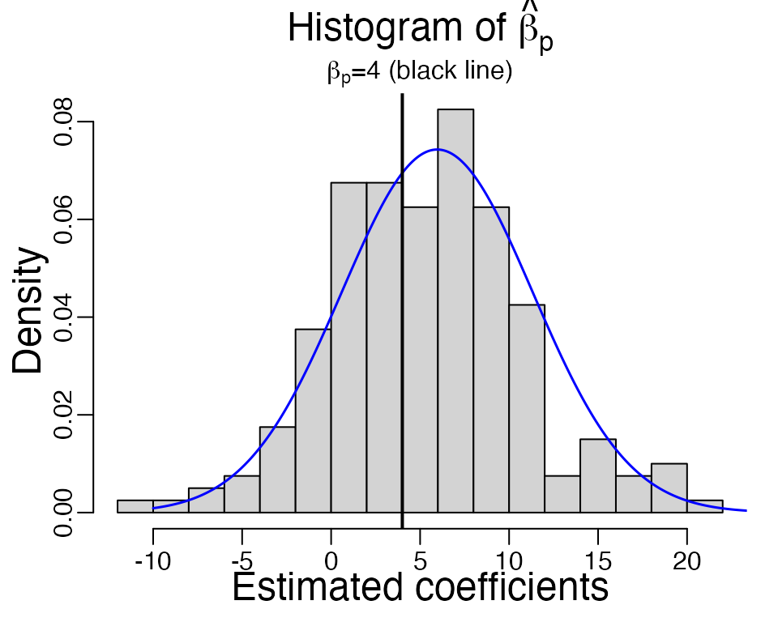

glmhd: statistical inference in high-dimensional binary regression
Qian Zhao
2020-10-14
Source:vignettes/my-vignette.Rmd
my-vignette.RmdIn this vignette we will show you how to use functions in the glmhd package to estimate the bias and variance of high dimensional logistic MLE (maximum likelihood estimates). “High dimension” refers to the setting when the number of observations \(n\) and number of variables \(p\) are both large.
Warm-up
As a recurring example, we consider a logistic regression model.
# Sample from a logistic model # n - number of samples # beta - coefficient vector # R - cholesky decomposition of the covariance matrix (R^t R) of the variables # adjust - if TRUE, computes the adjusted p-value for H0: beta1 = 0 sample_logistic <- function(n, beta, R, adjust = FALSE){ p <- length(beta) # number of variables # Generate data matrix X <- matrix(rnorm(n * p, 0, 1), n, p) %*% R / sqrt(n) # Sample response Y <- rbinom(n, 1, 1 / (1 + exp(- X %*% beta))) # Logistic regression fit <- glm(Y ~ X + 0, family = binomial, x = TRUE, y = TRUE) if(!adjust){ # Returns the p-th fitted coefficient and its standard error estimate c(fit$coef[p], summary(fit)$coef[p, 2]) }else{ # Returns the adjusted p-value for the first coordinate adjusted_fit <- adjust_glm(fit, verbose = FALSE, echo = TRUE) summary(adjusted_fit)$coef[1,4] } }
We pick \(n = 1000\) and \(p = 200\), and set the variables to be from multivariate Gaussian from a AR(1) model with \(\rho = 0.5\). For simplicity, we fix the the first half variables to be null and the second half have fixed coefficients \(\beta = 4\).
We repeat this function \(B = 200\) times, and draw a histogram of the MLE of the \(p\)th coefficient.
beta_hat <- replicate(B <- 200, sample_logistic(n, beta, R))

As we can see, the estimated \(\hat{\beta}\) is not centered at the true value \(\beta = 4\) (black line). The average \(\hat{\beta}\) is at 6.319, which is larger. If we look at a single simulation below, the estimated standard error of \(\hat{\beta}_p\) is 4.5, which is smaller than the observed standard deviation 5.12 from the independent samples.
X <- matrix(rnorm(n * p, 0, 1), n, p) %*% R / sqrt(n) Y <- rbinom(n, 1, 1 / (1 + exp(- X %*% beta))) fit <- glm(Y ~ X + 0, family = binomial)
summary(fit)$coef[p,2] # estimated std. from inverse Fisher information #> [1] 4.5
In general, as \(n, p\to\infty\) at a fixed ratio \(p / n\to \kappa \in (0, 1)\), and if the variables \(X\) to be multivariate Gaussian, the MLE of any coordinate \(\beta_j\) satisfies \[
\frac{\hat{\beta}_j^\mathrm{MLE} - \alpha_\star \beta_j}{\sigma_\star / \tau_j} \stackrel{d}{\longrightarrow} \mathcal{N}(0, 1),
\] where \(\tau^2_j = \mathrm{Var}(x_j\,|\,x_{-j})\) is the conditional variance of \(j\)th variable given all the others [1]. These parameters \((\alpha_\star, \sigma_\star)\) can be computed given \(\kappa = p/n\) and \(\gamma = \sqrt{\mathrm{Var}(X^\top \beta)}\). In this example, \[
\kappa = 0.2, \quad \gamma = 2.18,
\] and the corresponding \((\alpha_\star, \sigma_\star / \tau_p) = (1.49,5.37)\). We overlay the theoretical density curve of \(\hat{\beta}_p\) in the above histogram (blue curve), which agree well with the obeserved histogram overall, except for a few large \(\hat{\beta}_p\) in simulations. In reality, the parameter \(\gamma\) is typically unknown, so in the next section we will use glmhd package to estimate it.
Adjusting the MLE with glmhd
The goal of glmhd package is to estimate the inflation and standard deviation of the MLE more accurately than the classical theory. We use the ProbeFrontier algorithm [2] to estimate the signal strength parameter \(\gamma\), and then we estimate the inflation and standard deviation of the MLE. Now let’s load the library.
library(glmhd)
We repeat the previous example and compute the MLE. Note that we specify x = TRUE and y = TRUE here so the original data matrix is returned in fit.
# fit the MLE again fit <- glm(Y ~ X + 0, family = binomial, x = TRUE, y = TRUE)
Now we call the function adjust_glm to compute the adjusted MLE and standard error. There are three arguments for this function, but you only need to input the first one, the output glm object. Below, the second argument and third arguments are set at their default values, verbose specifies if progress should be printed, and echo = TRUE means that the input glm object is also returned in the output. Settingverbose = TRUE helps to track progress of the code, and identify issues if the algorithm fails.
adjusted_fit <- adjust_glm(fit, verbose = FALSE, echo = TRUE)
You can access the estimated parameters through adjusted_fit$param. In this vector, adjusted_fit$param["alpha_s"] is estimated \(\alpha_\star\) and adjusted_fit$param["sigma_s"] is estimated \(\sqrt{\kappa}\sigma_\star\). For example, you can compare the estimated inflation 1.468 with the observed value 1.58.
adjusted_fit$param["alpha_s"] # Estimated inflation #> alpha_s #> 1.47 adjusted_fit$param["sigma_s"] / sqrt(p/n) # estimated sigma_star #> sigma_s #> 4.51
You can obtain the adjusted MLE \(\hat{\beta}^\mathrm{Adj}_p = \hat{\beta}_p^\mathrm{MLE} / \alpha_\star\) and the adjusted standard error estimate \(\sigma_\star / \tau_j\) as follows.
adjusted_fit$coef_adj[p] # Adjusted MLE #> X200 #> -0.295 adjusted_fit$std_adj[p] # Adjusted std. #> X200 #> 5.29
Next, summary(adjusted_fit) prints the coefficient table. The first column is the adjusted MLE, the second column is \(\hat{\sigma}_j / \alpha_\star\), because the adjusted MLE satisfies \[
\frac{\hat{\beta}_j^\mathrm{Adj} - \beta_j}{\hat{\sigma}_j / \alpha_\star} \approx \mathcal{N}(0, 1),
\] for \(\hat{\sigma}_j = \sigma_\star / \tau_j\) the adjusted std. estimate.
print(summary(adjusted_fit), max = 40) #> Call: #> adjust_glm(glm_output = fit, verbose = FALSE, echo = TRUE) #> #> adjusted_mle std z.value p.value #> X1 -4.1752 3.5669 -1.17 0.24179 #> X2 -0.2684 4.0130 -0.07 0.94668 #> X3 4.3224 3.9439 1.10 0.27309 #> X4 -1.7159 4.0581 -0.42 0.67243 #> X5 -2.0337 4.0036 -0.51 0.61147 #> X6 -1.9952 3.8786 -0.51 0.60696 #> X7 3.2441 3.8600 0.84 0.40066 #> X8 3.8245 4.1671 0.92 0.35873 #> [ reached getOption("max.print") -- omitted 192 rows ] #> --- #> Signif. codes: 0 '***' 0.001 '**' 0.01 '*' 0.05 '.' 0.1 ' ' 1
Hypothesis testing
The summary function prints the adjusted MLE \(\hat{\beta}^\mathrm{Adj}\) and its std. \(\hat{\sigma} / \alpha_\star\), as well as a z-statistics \(z = \hat{\beta}/\hat{\sigma}^\mathrm{MLE}\) and a two-sided p-value \(\mathrm{P}(|\mathcal{N}(0,1)|\geq |z|)\). If the variables are multivariate Gaussian and the true model is logistic, then this p-value is from a Uniform[0,1] distribution under the null hypothesis that \(\beta_j = 0\).
The following is a simulation to examine whether the calculated p-value is approximately uniform. For simplicity, we consider the first variable, which is a null, and the function is also included at the beginning.
# pval_adj <- replicate(B <- 100, sample_logistic(n, p, R, adjust = TRUE))
You can use the likelihood ratio test (LRT) by calling the function lrt_glm. It requires two arguments, the first is a list of glm fits and the second is the param output from adjust_glm. It prints the likelihood ratio statistics and p-values computed according to the rescaled chi-squared distribution. Under the null hypothesis \[
H_0:\quad \beta_1 = \ldots = \beta_k = 0,
\] two times the likelihood ratio statistics \(\Lambda\) is asymptotically a re-scaled chi-squared variable with \(k\) degrees of freedom \[
2 \Lambda \stackrel{d}{\longrightarrow} \frac{\kappa_\star \sigma_\star^2}{\lambda_\star}\chi^2_k.
\]
f1 <- fit f2 <- glm(Y ~ X[, -1] + 0, family = binomial, x = TRUE, y = TRUE) # P-values for the LRT lrt <- lrt_glm(list(f1, f2), param = adjusted_fit$param) print(lrt) #> $models #> $models[[1]] #> Y ~ X + 0 #> #> $models[[2]] #> Y ~ X[, -1] + 0 #> #> #> $anova.tab #> Resid.Df Resid.Dev Df Deviance p.value #> 1 801 671 NA NA NA #> 2 800 669 1 2.01 0.24 #> #> attr(,"class") #> [1] "lrt_adj"
Model with an intercept
The previous example concerns a logistic model without an intercept, you can use the same function call for a model with an intercept. This is a separate section because the theory justification for this algorithm is still under study. The algorithm implemented in this package is based on the following conjecture: \[ \frac{\hat{\beta}_j^\mathrm{MLE} - \alpha_\star \beta_j}{\sigma_\star / \tau_j} \stackrel{d}{\longrightarrow} \mathcal{N}(0, 1), \] and the MLE of the intercept converges to some fixed quantity \[ \hat{\beta}_0 \stackrel{p}{\longrightarrow} b_\star. \] The adjusted MLE is \(\hat{\beta}^\mathrm{Adj} = \hat{\beta} / \alpha_\star\) and adjusted std. is \(\sigma_\star / \tau_j\).
Consider an example where the intercept term \(\beta_0 = - 0.5\). In this example, we can compute the \((\alpha_\star, \sigma_\star)\) (they depend on \(\kappa = p/n\), \(\gamma\) and true intercept \(\beta_0\)) and compare them with the estimates from independent samples. Notice that the input argument beta_0 for find_param function is the absolute value of \(\beta_0\).
gamma <- sqrt(sum((R %*% beta)^2/n)) # signal strength params <- find_param(kappa = p/n, gamma = gamma, beta0 = 0.5, verbose = FALSE) params[1] # true alpha_star #> [1] 1.5 params[3] / sqrt(p/n) # true sigma_star #> [1] 4.74
sample_logistic_intercept <- function(n, beta, R){ p <- length(beta) X <- matrix(rnorm(n * p, 0, 1), n, p) %*% R / sqrt(n) Y <- rbinom(n, 1, 1 / (1 + exp(- X %*% beta + 0.5))) fit <- glm(Y ~ X, family = binomial) # Returns the p-th fitted coefficient and its standard error c(fit$coef[p+1], summary(fit)$coef[p+1, 2]) }
beta_hat <- replicate(B, sample_logistic_intercept(n, beta, R))

The observed inflation in 200 samples is 1.588 and observed standard deviation is 5.18. The theoretical density curve of \(\hat{\beta}_p\) is shown in blue, and it agrees well with the histogram of \(\hat{\beta}_p\).
You can use the same function adjust_glm to compute the adjusted MLE \(\hat{\beta}_j^\mathrm{Adj} = \hat{\beta}_j^\mathrm{MLE} / \alpha_\star\) and adjusted standard error \(\sigma_\star / \tau_j\) without knowing the true parameters.
X <- matrix(rnorm(n * p, 0, 1), n, p) %*% R / sqrt(n) Y <- rbinom(n, 1, 1 / (1 + exp(- X %*% beta + 0.5))) fit <- glm(Y ~ X, family = binomial, x = TRUE, y = TRUE)
# Adjust MLE coefficients adjusted_fit <- adjust_glm(fit, verbose = FALSE)
adjusted_fit$intercept returns the estimated intercept, which you can compare with the MLE -0.837.
adjusted_fit$intercept #> [1] -0.507
You can also find the estimated inflation and standard deviation like before.
# Estimated inflation and std. adjusted_fit$param["alpha_s"] #> alpha_s #> 1.5 adjusted_fit$param["sigma_s"] / sqrt(p/n) #> sigma_s #> 4.74 # Adjusted MLE adjusted_fit$coef_adj[p] #> X200 #> 0.64 # Adjusted std. adjusted_fit$std_adj[p] #> X200 #> 5.58
Other link functions
If you are working with a probit model, you can use the glm function with family = binomial(link = "probit"), and use the glm object as input to adjust_glm It automatically identifies the link function from the family object.
References
[1] A modern maximum-likelihood theory for high-dimensional logistic regression, Pragya Sur and Emmanuel J. Candes, Proceedings of the National Academy of Sciences Jul 2019, 116 (29) 14516-14525
[2] The Asymptotic Distribution of the MLE in High-dimensional Logistic Models: Arbitrary Covariance, Qian Zhao, Pragya Sur and Emmanuel J. Candes, arXiv:2001.09351